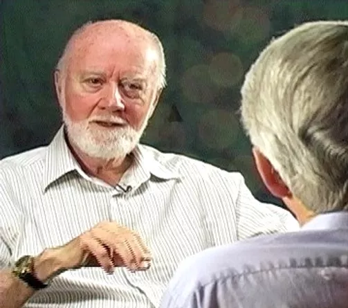

Discover more in our Insights section!
An his dictas reprehendunt. Ea eos tempor maluisset. Vix eu scripta theophrastus deterruisset, nostrud percipit in vim.
Learn More
Dr. William A. Tiller lived from 1929 to 2022 and was a pioneer of Psychoenergetic Science.
Dr. William A Tiller, Professor Emeritus Stanford University and founder of The Tiller Foundation was known by many around the world as the pioneer of Psychoenergetic Science.

He dedicated most of his working life to the study of science that includes consciousness. Dr. Tiller collaborated in this work with his loving wife, Jean. Together they explored many groundbreaking discoveries that profoundly help to uplift humanity and make our world a better place. Dr. Tiller was preceded by Jean in 2021 and by their son, Jeff who passed in 2000. He is survived by his beloved daughter, Andrea. Dr. Tiller will be remembered as a kind, loving and generous person and his remarkable legacy of work and his beautifully lived life will continue to inspire and support all humankind.
Bill, as his friends and colleagues knew him, was born September 18, 1929, in Toronto, Canada. He received his doctorate in Physical Metallurgy at the University of Toronto in 1955. He was a research scientist and advisory physicist at Westinghouse Research Laboratories in Pittsburgh, Pennsylvania until 1964 when he accepted a professorship at Stanford University in the Department of Materials Science. He became chairman of that department in 1966.
Simultaneously, Bill began personal investigations of human consciousness and the potential for inner enlightenment, or inner self-management, through meditation processes. While on a Guggenheim Fellowship and sabbatical to Oxford University in 1970, he realized that it was crucial for future science that a competent investigator from the United States make a long-term, serious commitment to both experimental and theoretical investigations of psychoenergetic phenomena. This area was anathema to the conventions of science at the time. His scientific experiments led him to the conclusion that human consciousness and intention can significantly influence physical reality. Around that time he realized that extant experimental data from the previous two centuries of psychoenergetic studies conducted around the world, when combined, further substantiated his theory. Bill returned to Stanford and gave up chairmanship of his department, as well as most of his committee work, in order to pursue formal research of psychoenergetics that would be parallel with his traditional research at Stanford. Despite opposition by most of his Stanford colleagues Bill pressed forward, solidly and consistently supported by his wife, Jean.
In the 1990's, after leaving Stanford, he moved to Arizona where he founded the Tiller Foundation for New Science. This became the Tiller Institute and later, shortly before fully retiring, he created The Tiller Foundation to continue his work.
During his rich and productive career, Bill taught graduate level classes in the areas of thermodynamics, kinetics, phase transformations and semiconductor processing, supervised over fifty doctoral theses, served on numerous professional and government committees, consulted with numerous industrial corporations, and published over two hundred scientific papers and four books. In 1992 Stanford University named him Professor Emeritus.